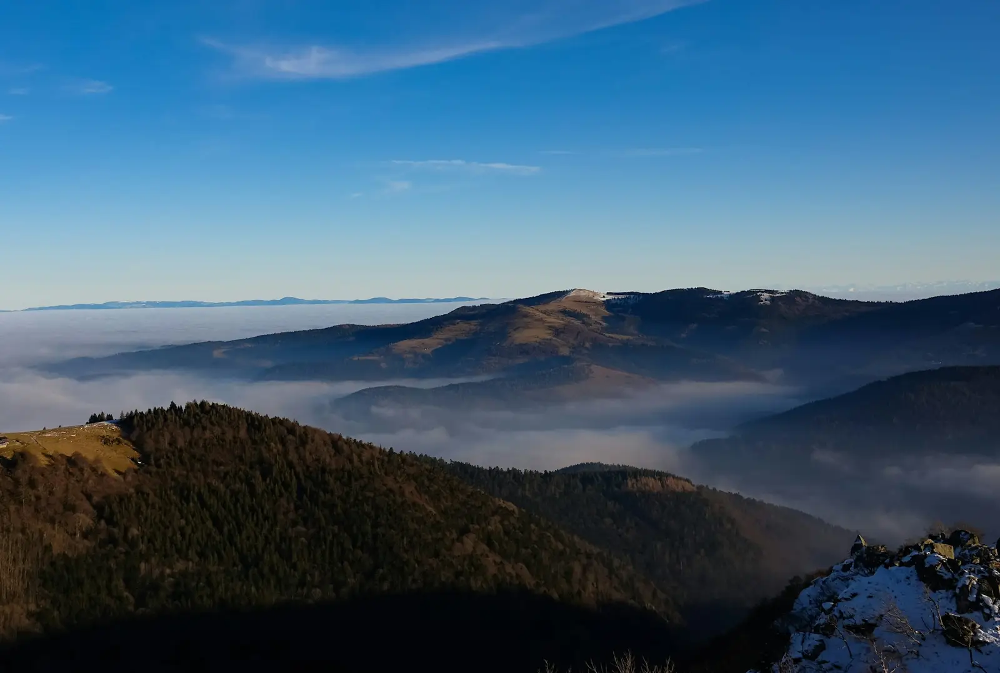
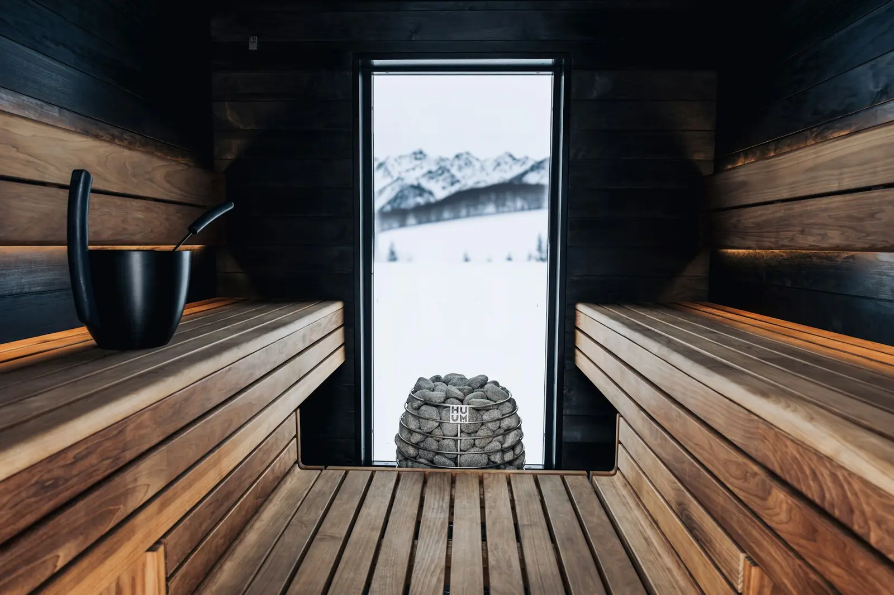
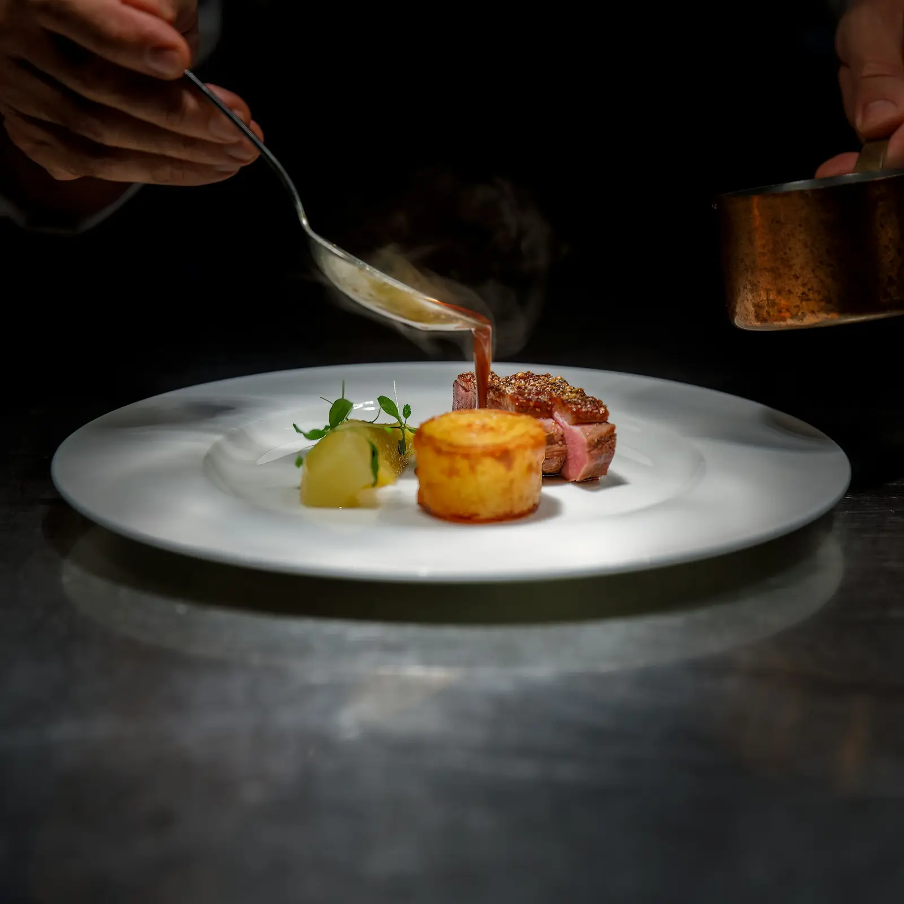
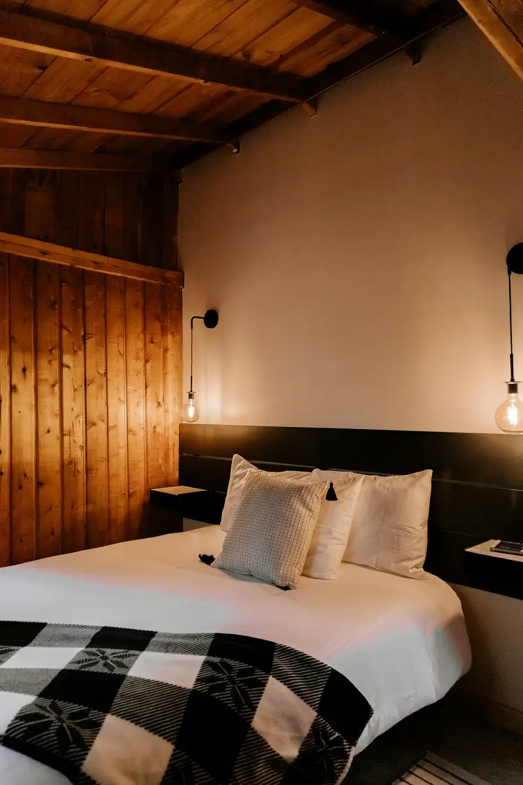
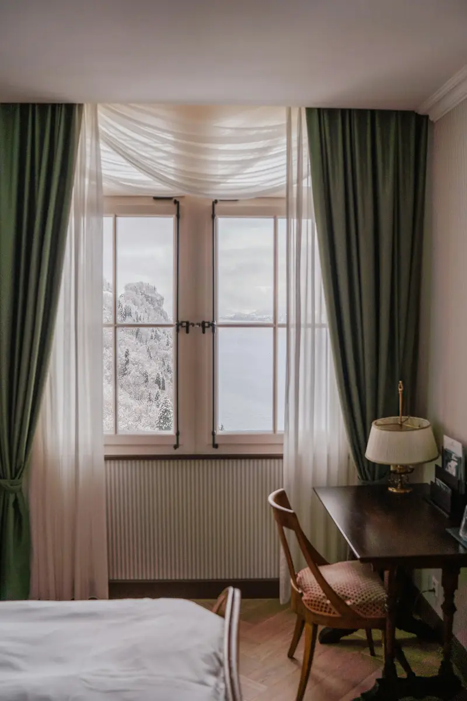
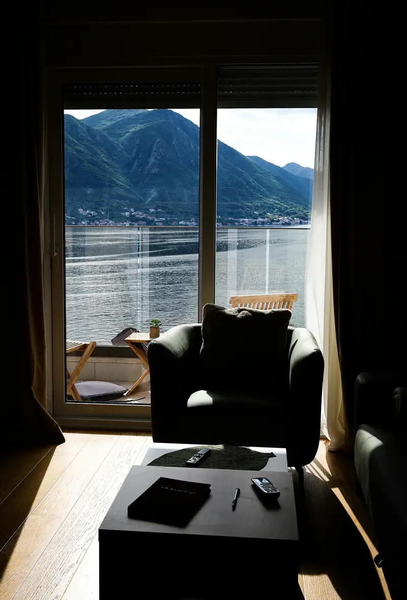
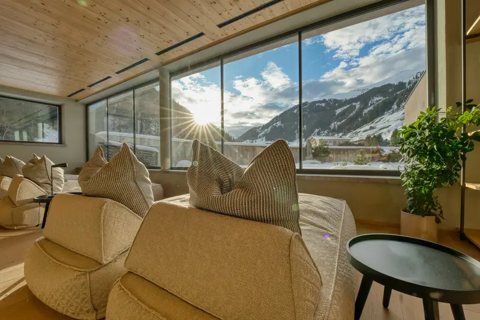
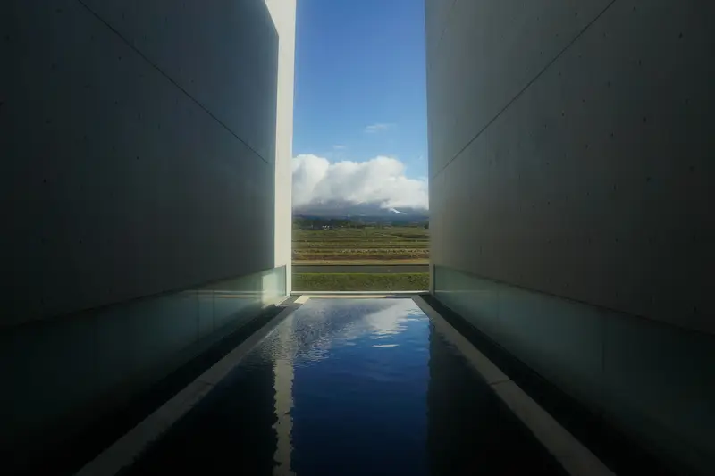
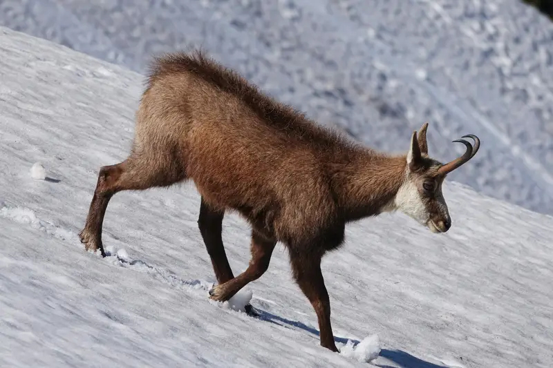
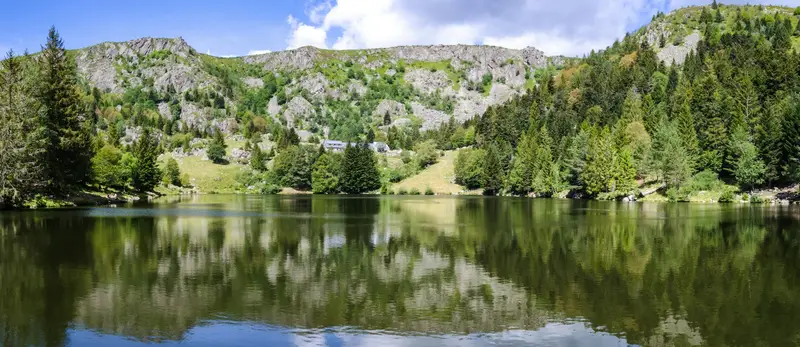

Là-haut, on entend la neige tomber.
Vingt-quatre chambres, un spa ouvert sur les sapins et une table de marcaire, à 1 050 mètres au-dessus du lac Blanc.
Le soleil se lève sur le lac Blanc et se couche derrière les crêtes.
Traversez l’hôtel



Une marcairie, il y a cent ans
Felsenmatt était une ferme d’été. On y montait les vaches sur les chaumes en juin et on y faisait le munster jusqu’aux premières neiges. Nous avons gardé les murs de granit, la charpente et le silence, puis ajouté ce qu’il faut pour ne plus avoir envie de redescendre.
- Altitude
- 1 050 m
- Chambres et suites
- 24
- Spa
- 1 400 m²
- Colmar
- 40 min
Les chambres
Toutes ont un lit de 180, du linge séché dehors quand il fait beau et une fenêtre qu’on referme à regret. Le petit-déjeuner et l’accès au spa sont compris.
-
26 m², côté forêt, pour deux
dès 290 €

-
32 m², balcon sur le lac Blanc, pour deux
dès 360 €

-
48 m², poêle à bois, jusqu’à trois
dès 520 €

-
70 m², terrasse et bain nordique privé, jusqu’à quatre
dès 840 €

Prix par nuit pour deux personnes, petit-déjeuner et spa compris. Taxe de séjour en sus.
Le bassin
Vingt-cinq mètres d’eau à 31 °C sous une verrière de mélèze. Le matin, la brume passe au ras de l’eau ; l’hiver, on nage en regardant tomber la neige.

- De 7 h à 22 h tous les jours, couloir de nage réservé jusqu’à 9 h
- Peignoirs, serviettes et sandales au bord de l’eau, rien à apporter
- Infusions de bourgeons de sapin et fruits secs, en libre-service
Le spa, du plus chaud au plus froid
Le spa se parcourt comme une randonnée : on monte en température, puis on redescend doucement jusqu’à l’eau de source. Comptez deux heures, et une sieste ensuite.
-
Sauna finlandais 85 °C
Banquettes en épicéa des Vosges, pierres de granit et une fenêtre sur la neige. On y verse de l’eau parfumée au pin.
-
Hammam 46 °C
Une vapeur douce sous une voûte de granit, et une fenêtre ronde qui donne sur le lac.
-
Bain nordique 38 °C
Une cuve de mélèze chauffée au feu de bois, dehors, sous les sapins. La neige fond avant de toucher l’eau.
-
Bassin extérieur 31 °C
On sort de la verrière à la nage. Dehors, le bassin déborde sur la vallée.
-
La source 9 °C
L’eau est captée à deux cents mètres de l’hôtel. Une seconde suffit ; on retourne ensuite au sauna.
Les soins
- Massage des chaumeshuile de foin et d’arnica de montagne60 min140 €
- Enveloppement au miel de sapinsuivi d’un temps de repos au coin du feu45 min110 €
- Soin du visage à l’eau de sourceargile des Vosges et brume de bourgeons50 min125 €
- Rituel Felsenmattgommage au sel de foin, massage, bain nordique privé2 h290 €
- Massage à deuxdans la cabane du spa, face à la forêt75 min320 €
Spa ouvert aux hôtes de 8 h à 21 h. Du lundi au jeudi, il accueille aussi quelques visiteurs : 65 € la demi-journée, sur réservation.
La Marcairie
Lise Ehrhart cuisine ce que les fermes des chaumes produisent à moins de vingt kilomètres : munster affiné à la cave, truite du lac, myrtilles sauvages, gibier en saison. Le menu change avec les semaines.
Dîner du mercredi au dimanche, de 19 h à 21 h 30.
Le petit-déjeuner se prend au coin du feu, de 7 h 30 à 11 h : pain du four, beurre de la ferme, confitures de myrtilles et œufs comme vous les aimez.
Autour de l’hôtel
La route des Crêtes passe à 800 mètres. En hiver, les raquettes et les skis de fond partent de la porte.
- Le lac Blanc20 min à pied, par le sentier des Roches
- Le lac Noir50 min à pied
- La route des Crêtesà 800 m, à pied ou à vélo
- Le Hohneck, 1 363 m25 min en voiture
- Kaysersberg25 min en voiture
- Colmar et sa gare40 min, navette sur demande
- Gérardmer35 min en voiture


Le courrier de l'hôtel
Cartes postales de nos hôtes
4,8
412 avis sur Google
Les avis les mieux notés, du plus récent au plus ancien. Avis publiés sur Google par leurs auteurs, sans contrôle de l'hôtel.
Avis imaginaires, comme l'hôtel. Sur le site d'un client, ses derniers avis Google s'affichent ici et se mettent à jour tout seuls.
-
Réveil face aux crêtes, bassin chauffé sous la neige, et un dîner qui vaut à lui seul le détour. Le personnel retient votre prénom dès le deuxième jour.
De la part de Émilie R. -
Ruhige Zimmer, ein wunderbarer Spa und das beste Frühstück der Vogesen. Wir kommen im Winter wieder.
De la part de Jonas W. -
Week-end offert pour nos vingt ans de mariage : la chambre Lac, un soin à deux au spa, et tout était parfait jusqu'au départ.
De la part de Sandrine K.
Réserver un séjour
Choisissez une chambre puis vos dates : les prix s’affichent par nuit, petit-déjeuner et spa compris. La réception confirme votre séjour sous deux heures, de 8 h à 22 h.
Pour réserver, appelez la réception au 03 53 01 72 48 ou écrivez à reservation@felsenmatt.example.